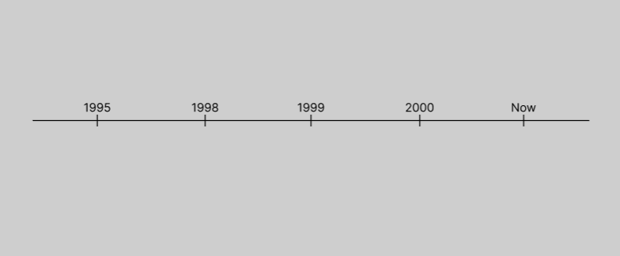

Volleyball was invented over 100 years ago as a gentle, no-contact game. Over time, leaders changed the rules to make it faster, safer, and much more exciting to watch.
How It Started
1. William G. Morgan and "Mintonette" (1895)
Invented in Massachusetts by William G. Morgan as a safe alternative to basketball.
Combined ideas from tennis (the net), handball (using hands), and baseball (turns).
Renamed to "Volley Ball" in 1896 because players volleyed the ball in the air. Officially became "Volleyball" in 1952.
2. The Set & Spike (1916)
Players in the Philippines invented the high pass and smash ("Filipino bomb").
Because spikes were too strong, new limits were set: 6 players per side and only 3 touches allowed.
3. FIVB & The Olympics
World federation (FIVB) formed in 1947.
Entered the Olympic Games at Tokyo 1964; beach volleyball joined in 1996.
How Key Rules Changed Over Time

Touching with Feet
Reform: 1995
Then: Touching the ball below the waist was an automatic foul.
Now: The ball can touch any part of your body, including feet.
Why: Lets players kick the ball off the floor for impossible defensive saves.
The Libero Specialist
Reform: 1998
Then: All players had to attack at the net and defend in the back row.
Now: A defensive expert in a different shirt plays back-row only.
Why: Helps teams defend hard spikes and keeps rallies alive longer.
Scoring System
Reform: 1999
Then: Only the serving team could earn a point. Sets took hours.
Now: Every single play gives a point to someone.
Why: Keeps matches fast and predictable for television.
Net Serves
Reform: 2000
Then: If a serve touched the net, the rally stopped immediately.
Now: If the ball hits the net and drops over, play continues.
Why: Rewards fast jump serves and stops unnecessary whistle breaks.
Cameras & Fair Play
Reform: Modern Era
Then: Calls depended only on human referee eyesight.
Now: Video cameras check touches and honest players earn green cards.
Why: Removes referee mistakes and rewards honesty.